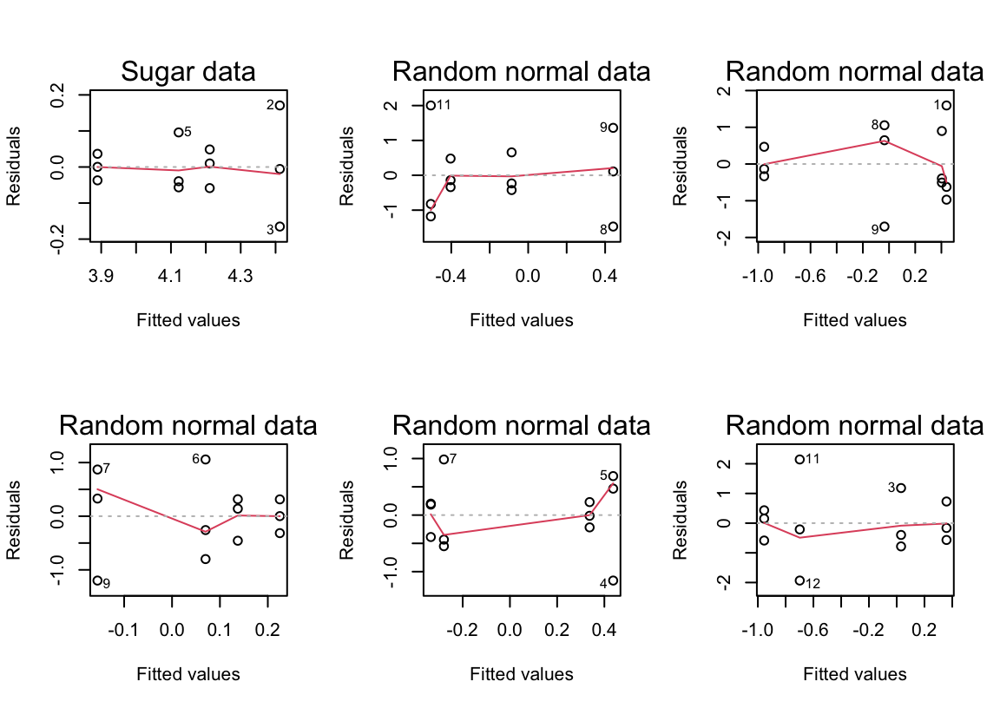

4 Answers to Selected Chapter 4 Exercises
Exploiting the linear model framework
output: html_document: default pdf_document: includes: in_header: “preamble.tex” latex_engine: xelatex
library(DAAG)Exercise 1
Re-analyze the sugar weight data of Subsection 4.1.1 using the log(weight) in place of weight.
From the scatterplot in Figure 4.1, it is clear that the treatment variances are not constant. Perhaps a logarithmic transformation will stabilize the variances.
sugarlog.aov <- aov(log(weight) ~ trt, data=sugar)
summary.lm(sugarlog.aov)
Call:
aov(formula = log(weight) ~ trt, data = sugar)
Residuals:
Min 1Q Median 3Q Max
-0.165171 -0.043725 -0.002533 0.039628 0.170688
Coefficients:
Estimate Std. Error t value Pr(>|t|)
(Intercept) 4.41224 0.05738 76.900 9.11e-13
trtA -0.29015 0.08114 -3.576 0.00723
trtB -0.20109 0.08114 -2.478 0.03822
trtC -0.52291 0.08114 -6.444 0.00020
Residual standard error: 0.09938 on 8 degrees of freedom
Multiple R-squared: 0.8426, Adjusted R-squared: 0.7835
F-statistic: 14.27 on 3 and 8 DF, p-value: 0.001414summary.lm(sugarlog.aov)
Call:
aov(formula = log(weight) ~ trt, data = sugar)
Residuals:
Min 1Q Median 3Q Max
-0.165171 -0.043725 -0.002533 0.039628 0.170688
Coefficients:
Estimate Std. Error t value Pr(>|t|)
(Intercept) 4.41224 0.05738 76.900 9.11e-13
trtA -0.29015 0.08114 -3.576 0.00723
trtB -0.20109 0.08114 -2.478 0.03822
trtC -0.52291 0.08114 -6.444 0.00020
Residual standard error: 0.09938 on 8 degrees of freedom
Multiple R-squared: 0.8426, Adjusted R-squared: 0.7835
F-statistic: 14.27 on 3 and 8 DF, p-value: 0.001414On the log scale, the differences from control remain discernible. However the plot should be compared with plots from random normal data. This should be repeated several times. There will be occasional samples that show changes in variability of the observed residuals that are of the extent observed for these data.
THe following shows plots of residuals versus fitted values, for the log(sugar weight) data, and for random normal data.

par(mfrow=c(2,3))
plot(sugarlog.aov, which=1, caption="Sugar data")
for(i in 1:5){
plot(aov(rnorm(12)~sugar$trt), which=1, caption="Random normal data")
title(main=, line=1.75)
}Exercise 3
For each of the datasets DAAG::elastic1 and DAAG::elastic2, determine the egression of stretch on distance. Use the method of Section 4.3 to compare, formally, the two regression lines.
It will be convenient to work with a single data frame:
elastic2$expt <- rep(2, length(elastic2$stretch))
elastic1$expt <- rep(1, length(elastic1$stretch))
elastic <- rbind(elastic1, elastic2)
elastic$expt <- factor(elastic$expt)We fit two models as follows:
e.lm1 <- lm(distance ~ stretch, data=elastic) # a single line
e.lm2 <- lm(distance ~ stretch + expt, data=elastic)
# two parallel lines
e.lm3 <- lm(distance ~ stretch + expt + stretch:expt, data=elastic)
# two linesThe following sequential analysis of variance table indicates that there is mild evidence against the two lines having the same intercept.
anova(e.lm1, e.lm2, e.lm3)Analysis of Variance Table
Model 1: distance ~ stretch
Model 2: distance ~ stretch + expt
Model 3: distance ~ stretch + expt + stretch:expt
Res.Df RSS Df Sum of Sq F Pr(>F)
1 14 2549.0
2 13 2017.4 1 531.61 3.2249 0.09773
3 12 1978.1 1 39.25 0.2381 0.63435A check will show that observation 7 is an influential outlier. Let’s check to see what happens to the three models when this observation is deleted.
e.lm1 <- lm(distance ~ stretch, data=elastic[-7,])
e.lm2 <- lm(distance ~ stretch + expt, data=elastic[-7,])
e.lm3 <- lm(distance ~ stretch + expt + stretch:expt, data=elastic[-7,])
anova(e.lm1, e.lm2, e.lm3)Analysis of Variance Table
Model 1: distance ~ stretch
Model 2: distance ~ stretch + expt
Model 3: distance ~ stretch + expt + stretch:expt
Res.Df RSS Df Sum of Sq F Pr(>F)
1 13 1204.9
2 12 1042.4 1 162.496 1.7870 0.2083
3 11 1000.2 1 42.156 0.4636 0.5100Now, we see that there is really very little evidence of a difference between the two lines. Observation 7 seems different in character from other observations.
Exercise 4
The data frame toycars consists of 27 observations on the distance (in meters) traveled by one of three different toy cars on a smooth surface, starting from rest at the top of a16-inch-long ramp tilted at varying angles (measured in degrees). Because of differing frictional effects for the three different cars, we seek three regression lines relating distance traveled to angle (measured in degrees). Start by plotting the data:
toycars <- DAAG::toycars
lattice ::xyplot(distance ~ angle, groups=factor(car), type=c('p','r'),
data=toycars, auto.key=list(columns=3))- Fit the following models:
parLines.lm <- lm(distance ~ 0+factor(car)+angle, data=toycars)
sepLines.lm <- lm(distance ~ factor(car)/angle, data=toycars)Compare the AIC statistics for the two models. Examine the diagnostic plots carefully. Is there a systematic pattern of departure from linear relationships?
b. Fit the model
sepPol3.lm <- lm(distance ~ factor(car)/angle+poly(angle,3)[,2:3], data=toycars)Compare the AIC statistics with those for the two models that fitted straight line relationships. Compare the diagnostic plots, with the diagnostic plots for one or other of the straight line models.
c. Repeat the comparison using the code:
sapply(list(parLines.lm, sepLines.lm, sepPol3.lm), AICcmodavg::AICc)Comment on the result.
d. A plausible physical model suggests that the three lines should have the same intercept (close to 0), and possibly differing slopes, where the slopes are inversely related to the coefficient of dynamic friction for each car. Is that consistent from what is apparent here? Comment.
e. Extract the adjusted \(R^2\) statistics for the three models
setNames(sapply(list(parLines.lm, sepLines.lm, sepPol3.lm),
function(x)summary(x)$adj.r.squared), c("parLines","sepLines","sepPol3"))Repeat for \(R^2\). This illustrates why neither of these statistics should be taken too seriously. In neither case does maximizing the statistic give the best model!
toycars$car <- factor(toycars$car) # car should be a factor
toycars.lm <- lm(distance ~ angle + car, data=toycars)
summary(toycars.lm)
Call:
lm(formula = distance ~ angle + car, data = toycars)
Residuals:
Min 1Q Median 3Q Max
-0.098113 -0.042401 -0.006689 0.017408 0.172513
Coefficients:
Estimate Std. Error t value Pr(>|t|)
(Intercept) 0.092524 0.034671 2.669 0.01372
angle 0.188541 0.009945 18.958 1.55e-15
car2 0.111111 0.031951 3.478 0.00204
car3 -0.082222 0.031951 -2.573 0.01699
Residual standard error: 0.06778 on 23 degrees of freedom
Multiple R-squared: 0.9451, Adjusted R-squared: 0.938
F-statistic: 132.1 on 3 and 23 DF, p-value: 1.219e-14From the diagnostics (below), we see that there is an influential outlier. The model is not fitting all of the data satisfactorily.
Code is:
par(mfrow=c(1,4))
plot(toycars.lm)To fit the model with a constant intercept and possibly differing slopes, we proceed as follows:
toycars.lm2 <- lm(distance ~ angle + angle:car, data=toycars)
summary(toycars.lm2)
Call:
lm(formula = distance ~ angle + angle:car, data = toycars)
Residuals:
Min 1Q Median 3Q Max
-0.10841 -0.04678 -0.01225 0.06970 0.10618
Coefficients:
Estimate Std. Error t value Pr(>|t|)
(Intercept) 0.10215 0.03037 3.364 0.00268
angle 0.18190 0.01215 14.971 2.38e-13
angle:car2 0.04158 0.01120 3.714 0.00114
angle:car3 -0.02167 0.01120 -1.935 0.06539
Residual standard error: 0.07011 on 23 degrees of freedom
Multiple R-squared: 0.9413, Adjusted R-squared: 0.9336
F-statistic: 122.9 on 3 and 23 DF, p-value: 2.653e-14We can see from the diagnostics below that observation 17 is still somewhat influential, but it is no longer an outlier. All of the data are accommodated by this new model reasonably well.
Exercise 5
The data frame cuckoos holds data on the lengths and breadths of eggs of cuckoos, found in the nests of six different species of host birds. Fit models for the regression of length on breadth that have:
a. a single line for all six species.
b. different parallel lines for the different host species.
c. separate lines for the separate host species.
Use the anova() function to print out the sequential analysis of variance table. Which of the three models is preferred? Print out the diagnostic plots for this model. Do they show anything worthy of note? Examine the output coefficients from this model carefully, and decide whether the results seem grouped by host species. How might the results be summarized for reporting purposes?
cuckoos.lm <- lm(length ~ breadth, data=cuckoos) # one line
cuckoos.lm2 <- lm(length ~ breadth + species, data=cuckoos)
# parallel lines
cuckoos.lm3 <- lm(length ~ breadth + species + species:breadth,
data=cuckoos) # different lines
anova(cuckoos.lm, cuckoos.lm2, cuckoos.lm3)Analysis of Variance Table
Model 1: length ~ breadth
Model 2: length ~ breadth + species
Model 3: length ~ breadth + species + species:breadth
Res.Df RSS Df Sum of Sq F Pr(>F)
1 118 101.923
2 113 79.114 5 22.8096 6.5711 2.244e-05
3 108 74.978 5 4.1356 1.1914 0.3182The anova summary shows a preference for the second mode. The standard diagnostics are given below.

There is nothing on these plots that calls for especial attention.
summary(cuckoos.lm2)
Call:
lm(formula = length ~ breadth + species, data = cuckoos)
Residuals:
Min 1Q Median 3Q Max
-2.37337 -0.49106 -0.06816 0.52980 2.54470
Coefficients:
Estimate Std. Error t value Pr(>|t|)
(Intercept) 9.51559 3.01765 3.153 0.002068
breadth 0.81117 0.17951 4.519 1.54e-05
speciesmeadow.pipit -0.80125 0.25610 -3.129 0.002234
speciespied.wagtail -0.01324 0.31454 -0.042 0.966503
speciesrobin -0.30310 0.31137 -0.973 0.332414
speciestree.pipit 0.04490 0.31143 0.144 0.885621
specieswren -1.23912 0.35300 -3.510 0.000644
Residual standard error: 0.8367 on 113 degrees of freedom
Multiple R-squared: 0.4192, Adjusted R-squared: 0.3884
F-statistic: 13.59 on 6 and 113 DF, p-value: 1.439e-11The baseline species is hedge sparrow, and we see some groupings among the host species.
The relation between length and breadth of the eggs is similar when the
host species are hedge sparrow, pied wagtail and tree pipit. Even when the robin is the host species, there is little evidence of a difference in the way in which length and breadth are related. However, the linear relation between length and breadth has a smaller intercept when the host species is either the meadow pipit or the wren.
Exercise 7
*Compare the two results
seedrates.lm <- lm(grain ~ rate + I(rate^2), data=seedrates)
seedrates.pol <- lm(grain ~ poly(rate,2), data=seedrates)Check that the fitted values and residuals from the two calculations are the same, and that the \(t\)-statistic and \(p\)-value are the same for the final coefficient, i.e., the same for the coefficient labeled poly(rate, 2)2 in the polynomial regression as for the coefficient labeled I(rate^2) in the regression on rate and rate^2.
Regress the second column of model.matrix(seedrates.pol) on rate and I(rate^2), and similarly for the third column of model.matrix(seedrates.pol). Hence express the first and second orthogonal polynomial terms as functions of rate and rate^2.
The following shows that the fitted values and residuals are the same for the two calculations. The \(t\)-statistic and \(p\)-value are also the same for the final coefficient.
seedrates.lm <- lm(grain ~ rate + I(rate^2), data=seedrates)
seedrates.pol<- lm(grain ~ poly(rate, 2), data=seedrates)
fitted(seedrates.lm)-fitted(seedrates.pol)1 2 3 4 5
0 0 0 0 0 resid(seedrates.lm)-resid(seedrates.pol) 1 2 3 4 5
-3.122502e-16 5.967449e-16 -9.714451e-17 -3.035766e-16 1.543904e-16 summary(seedrates.lm)
Call:
lm(formula = grain ~ rate + I(rate^2), data = seedrates)
Residuals:
1 2 3 4 5
0.045714 -0.122857 0.094286 -0.002857 -0.014286
Coefficients:
Estimate Std. Error t value Pr(>|t|)
(Intercept) 2.406e+01 4.557e-01 52.799 0.000359
rate -6.669e-02 9.911e-03 -6.728 0.021384
I(rate^2) 1.714e-04 4.902e-05 3.497 0.072943
Residual standard error: 0.1146 on 2 degrees of freedom
Multiple R-squared: 0.9961, Adjusted R-squared: 0.9922
F-statistic: 255.7 on 2 and 2 DF, p-value: 0.003895summary(seedrates.pol)
Call:
lm(formula = grain ~ poly(rate, 2), data = seedrates)
Residuals:
1 2 3 4 5
0.045714 -0.122857 0.094286 -0.002857 -0.014286
Coefficients:
Estimate Std. Error t value Pr(>|t|)
(Intercept) 19.32000 0.05127 376.832 7.04e-06
poly(rate, 2)1 -2.56144 0.11464 -22.343 0.0020
poly(rate, 2)2 0.40089 0.11464 3.497 0.0729
Residual standard error: 0.1146 on 2 degrees of freedom
Multiple R-squared: 0.9961, Adjusted R-squared: 0.9922
F-statistic: 255.7 on 2 and 2 DF, p-value: 0.003895From the following output, we can infer that the first orthogonal polynomial is \[ p_1(x) = -1.265 + .01265x \] and the second orthogonal polynomial is \[ p_2(x) = 3.742 - .08552x + .0004276x^2\]
attach(seedrates)
y <- model.matrix(seedrates.pol)[,2]
y.lm <- lm(y ~ rate + I(rate^2))
coef(y.lm) (Intercept) rate I(rate^2)
-1.264911e+00 1.264911e-02 8.036035e-20 y <- model.matrix(seedrates.pol)[,3]
y.lm <- lm(y ~ rate + I(rate^2))
coef(y.lm) (Intercept) rate I(rate^2)
3.741657387 -0.085523597 0.000427618 Among other things, the polynomials given above have the property that \[ p_1(50)p_2(50) + p_1(75)p_2(75) + p_1(100)p_2(100)+p_1(125)p_2(125)+ p_1(150)p_2(150) \] since the values of the predictor are:
rate[1] 50 75 100 125 150detach(seedrates)Exercise 14
The ozone data frame holds data, for nine months only, on ozone levels at the Halley Bay station between 1956 and 2000. (See Christie (2000) and Shanklin (2001) for the scientific background. Up to date data are available from the website given under ?DAAG::ozone. Replace zeros by missing values. Determine, for each month, the number of missing values. Plot the October levels against Year, and fit a smooth curve. At what point does there seem to be clear evidence of a decline? Plot the data for other months also. Do other months show a similar pattern of decline?
A simple way to replace 0’s by missing value codes is the following: ::: {.cell layout-align=“center”}
names(ozone) [1] "Year" "Aug" "Sep" "Oct" "Nov" "Dec" "Jan" "Feb"
[9] "Mar" "Apr" "Annual"Ozone <- ozone
for (i in 2:11){
Ozone[ozone[,i]==0, i] <- NA
}:::
One way to count up the monthly missing values is the following: ::: {.cell layout-align=“center”}
sapply(Ozone[,-c(1,11)], function(x) sum(is.na(x)))Aug Sep Oct Nov Dec Jan Feb Mar Apr
21 8 0 0 0 0 0 0 11 :::
A plot of the October ozone levels against Year can be obtained as follows: ::: {.cell layout-align=“center”} ::: {.cell-output-display}  ::: :::
::: :::
We see that ozone level is decreasing throughout the period, but there is an acceleration in the mid- to late-1970s.
To plot the data for the other months, we can do the following:
Similar declines are evident in several of the other months. The decline is less steep in some of the other months.